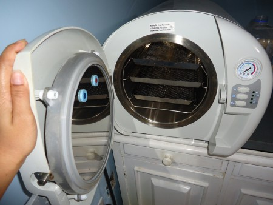
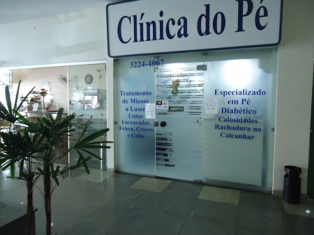
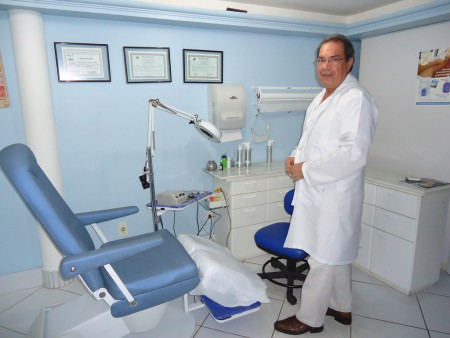

Órteses Ungueais Villegas: Solução Inovadora de Fabricação Própria
Mais facilidade e agilidade na aplicação, alívio superior e durabilidade. Disponível em Kits Profissionais e Sacolinhas de reposição de 10 unidades com parcelamento em até 12x sem juros no Mercado Livre.
Podologia no conforto do seu lar com padrão cirúrgico
Atendimento domiciliário ideal para idosos, pessoas acamadas ou com mobilidade reduzida em Vila Velha. Kit esterilizado individual e rigorosa assepsia.
Atendimento Clínico & Home Care (Domiciliar)
Biossegurança Cirúrgica
Saúde, alívio da dor e qualidade de vida para os seus passos.
Cuidado humanizado e especializado para seus pés na Praia da Costa, Vila Velha. Tratamento avançado de unhas encravadas, prevenção de lesões no pé diabético, calosidades e comodidade do atendimento no conforto da sua residência.
Soluções clínicas completas para a saúde dos seus pés
A podologia é a ciência dedicada à anatomia, fisiologia e patologias dos pés. Unimos técnicas consolidadas, tecnologia a laser e atenção individualizada a cada queixa.
Cuidado ao Idoso
Podogeriatria (Saúde do Idoso)
Com o passar dos anos, a pele perde elasticidade e as unhas tornam-se espessas (onicogrifose). O atendimento podogeriátrico previne feridas, alivia desconfortos e devolve a autonomia para caminhar com total segurança.
Corte técnico e afundamento seguro de unhas espessas
Prevenção de úlceras e lesões por atrito
Opção de atendimento no consultório ou domiciliar
Prevenção Vital
Tratamento e Prevenção do Pé Diabético
Pela redução de sensibilidade e circulação sanguínea periférica, pequenas lesões no paciente diabético podem evoluir gravemente. Nosso protocolo preventivo emprega cautela redobrada e instrumentais não invasivos.
Avaliação de integridade cutânea e pontos de pressão
Corte terapêutico sem cortes acidentais ou machucados
Orientação continuada para higiene e calçados adequados
Alívio da Dor
Unha Encravada & Correção por Órteses
Espículas causadas por corte incorreto ou calçados apertados geram dor intensa e granulomas. Realizamos a desobstrução indolor da lâmina e aplicamos órteses elásticas ou metálicas para corrigir a curvatura da unha.
Remoção da espícula sem extrair a unha (preservação da matriz)
Aplicação de órteses corretivas (fibra, lâmina ou ômega metálico)
Combate a inflamações, edemas e granulomas
Tecnologia Clínica
Tratamento de Micoses a Laser (Onicomicose)
Fungos dermatófitos alimentam-se da queratina, causando descolamento, manchas brancas (leuconíquia) e deformidades. A terapia fotodinâmica/laser atua diretamente no leito ungueal, acelerando a renovação saudável da unha.
Procedimento indolor e sem efeitos colaterais sistêmicos
Desbastamento profilático de lâminas infectadas
Orientações rigorosas de assepsia doméstica e calçados
Conforto ao Pisar
Calos Duros, Moles e Calosidades
Fruto do atrito mecânico constante em proeminências ósseas e articulações. Diferenciamos calos interdigitais (moles) de calosidades plantares, removendo o núcleo doloroso de forma segura sem ferir a pele sadia.
Desbastamento técnico de hiperqueratoses plantares
Remoção cuidadosa de núcleos queratósicos profundos
Indicação de protetores de silicone para calos nos dedos
Regeneração Cutânea
Fissuras Calcâneas & Palmilhas Localizadas
Lixar a pele excessivamente pode estimular ainda mais o endurecimento cutâneo. Nosso tratamento trata fissuras superficiais e profundas, fechando feridas e prevenindo a entrada de bactérias com hidratação terapêutica.
Tratamento e cicatrização de rachaduras com sangramento
Palmilhas adesivas localizadas para joanetes e esporão de calcâneo
Cuidado com verrugas plantares (olho de peixe/cravos)
Comodidade & Respeito ao Paciente
Atendimento Domiciliar Especializado: O consultório no conforto do seu lar
Sabemos que o deslocamento até a clínica pode ser doloroso ou impraticável para idosos, pessoas acamadas, pós-cirúrgicos ou pacientes com mobilidade reduzida. Levamos nossa maleta técnica com todos os instrumentais autoclavados e descartáveis até a sua residência em Vila Velha, Vitória e regiões vizinhas.
Mesmo Padrão Clínico
Esterilização hospitalar e assepsia rigorosa no seu quarto ou sala.
Horário Flexível
Agendamento prévio programado com pontualidade e tranquilidade.
Foco na Terceira Idade
Atenção paciente, sem pressa, respeitando o ritmo e limitações do paciente.
Solicite uma Visita
Consulte a disponibilidade para seu bairro pelo WhatsApp ou telefone.
Sua saúde e tranquilidade protegidas em cada atendimento
A contaminação cruzada por fungos, bactérias e vírus (como hepatites e micoses) é um perigo real em locais sem controle sanitário. Na Podologia Labarca, a biossegurança é um compromisso inegociável, seguindo as diretrizes rigorosas dos órgãos de saúde.
Autoclave de Vapor Pressurizado
Esterilização completa com ciclo controlado de temperatura e pressão, eliminando 100% de esporos, bactérias e micro-organismos.
Embalagens de Grau Cirúrgico com Indicador Químico
Cada kit de instrumentais (alicate, bisturi, goiva) é lacrado individualmente e aberto na presença do paciente.
Descartáveis Individuais de Uso Único
Lixas descartáveis, luvas de látex/nitrílicas, protetores para cadeira podológica e toalhas higiênicas descartadas a cada sessão.

Autoclave Digital Monitorada

Ambiente Higienizado e Seguro

+15
Anos de Prática Clínica
Responsável Técnico
Conheça o Podólogo Clínico Luís Labarca
Com vasta experiência no tratamento integral das afecções dos pés, Luís Labarca fundou a Podologia Labarca (Clínica do Pé) na Praia da Costa, com a missão de transformar o atendimento podológico em uma experiência acolhedora, indolor e de alta resolutividade.
Nossa filosofia é pautada na atualização técnica contínua e no respeito intransigente ao bem-estar do paciente. Cada caso é examinado detalhadamente antes de qualquer procedimento, orientando hábitos diários para que o problema não retorne.
Transparência e clareza para que você se sinta seguro e confortável antes da sua consulta.
Essa é a principal dúvida de quem nunca foi ao podólogo. O objetivo da podologia clínica é justamente o alívio da dor com o mínimo de desconforto possível. Usamos técnicas anatômicas precisas e emolientes específicos para garantir um procedimento suave, mesmo no caso de unhas encravadas inflamadas.
Nunca se deve arrancar a unha inteira. A extração cirúrgica total é traumática e, na grande maioria das vezes, a nova unha que nasce volta a encravar na mesma curvatura. Na podologia, removemos apenas a espícula (o fragmento lateral que agride a pele) e aplicamos órteses para reeducar o crescimento natural da lâmina.
O tempo varia conforme o grau de comprometimento e a velocidade de crescimento da unha (as unhas dos pés levam de 8 a 12 meses para se renovarem completamente). Com a associação de Laserterapia e disciplina nos cuidados em casa (higienização de calçados e aplicação correta de antimicóticos), o tempo de recuperação é significativamente reduzido.
Sim! Tratamos afecções ungueais das mãos sempre que estiverem dentro do escopo da podologia clínica, como micoses (onicomicose), deformidades, espessamentos ou paroníquia (inflamação ao redor da cutícula).
Basta entrar em contato pelo telefone ou WhatsApp informando o endereço do paciente, suas necessidades clínicas e eventuais dificuldades de locomoção. Organizamos a escala e levamos todos os equipamentos esterilizados até o endereço informado em Vila Velha, Vitória e cidades adjacentes.
Localização e Atendimento
Estamos prontos para cuidar de você
Localização privilegiada na Praia da Costa com total acessibilidade, elevadores e estacionamento nas proximidades.
Podologia Labarca
Entre em contato para agendar sua consulta no consultório ou solicitar visita domiciliar.